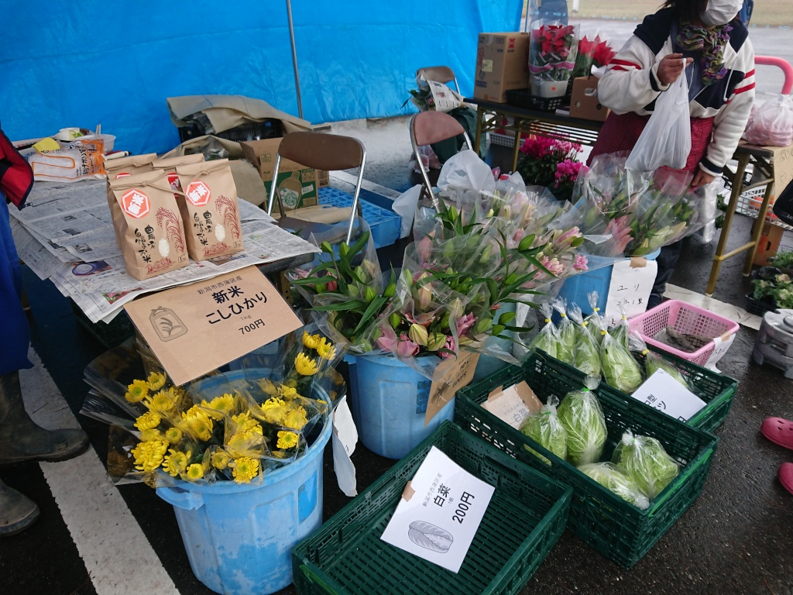
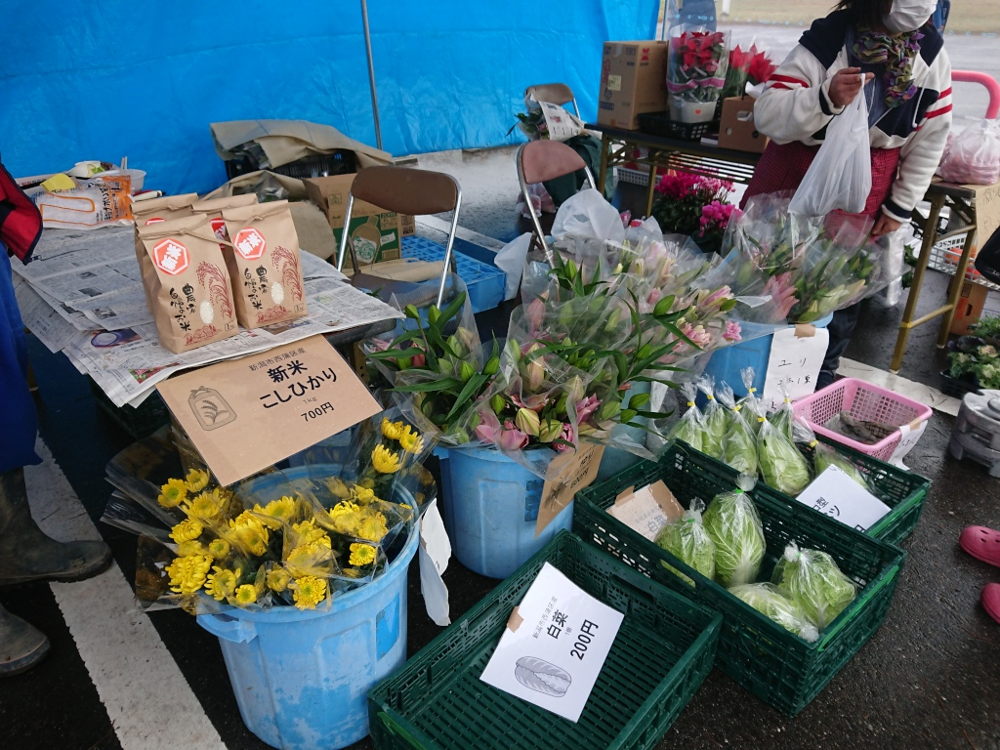

かもん！カモねぎくん
ようこそ「かもん！カモねぎくん」のページへ！

ここは、「かもん！カモねぎまつり」の情報やキャラクターの「カモねぎくん」に関連する画像データ等を公開しているサイトです。
公開している画像データ等は、個人利用・商用利用を問わず、無料でご利用いただけます。
画像データ等はこちら！
かもん！カモねぎまつり2025の様子です。ランダムに画像が表示されます。
かもん！カモねぎまつりとは？
かもん！カモねぎまつりは、新潟市西蒲区潟東地域で毎年12月の第一日曜日に行われているイベントです。
ネギなどの冬野菜の販売や飲食物の販売、キッチンカーなどの出店もあります。

かもん！カモねぎまつり開催のお知らせ
令和7年(2025年)のかもん！カモねぎまつりは、下記のとおり開催されます。
イベント概要
- 開催日時
- 令和7年12月7日(日) 9時00分から14時00分
- 開催会場
- 潟東地域コミュニティセンター内及びその周辺
- 案内チラシ
- かもん！カモねぎまつり2025チラシ
カモ汁レストランは800食限定、カモ汁定食はコシヒカリ御飯付きで1,000円です。
レストランは入れ替え制で、下記の時間帯となります。
- 1回目 10:00～10:50
- 2回目 11:00～11:50
- 3回目 12:00～12:50
前売りチケット
前売りチケット(カモ汁券)は潟東地域コミュニティセンターで、令和7年11月7日(金曜日)より販売開始です。
今年もカモ汁券は前売り券のみです。当日券はありません。

- 受付時間
- 9時00分から19時00分
- 休み
- 11月10日、17日、23日、24日、12月1日
- 電話
- 0256-86-3123
その他、かもん！カモねぎまつりに関する最新情報は、潟東地域コミュニティ協議会のホームページかFacebookのページをご覧ください。
開催会場の位置
潟東地域コミュニティセンター
新潟市西蒲区三方2番地
アクセス
- 公共交通
- JR越後曽根駅下車、タクシーで15分
- 車
- 北陸道巻潟東ICから国道460号経由6分
カモねぎまつりアーカイブス
かもん！カモねぎまつりに関する過去の情報をまとめました。
広報かたひがし
平成8年(1996年)11月の第1回かもん！カモねぎまつりを紹介する広報かたひがしのページです。
広報かたひがし 平成8年11月
この記事でカモねぎくんは、カモねぎまつりマスコットとして紹介されています。
カモねぎまつりのチラシ
YouTube動画
過去のカモねぎまつりの様子がYouTubeにアップされています。
カモねぎまつりの様子
かもん！カモねぎまつりの様子です。 毎年12月の上旬は天気が悪く、なんかいつも雨模様の印象なんですよね…


無双網の展示もされています。
となりにはカモたちがカゴに入れられていました。
以前は鴨猟の実演もあったのですが、近年は行われていないようです。
カモ汁レストランの様子です。
レストランと言っても、体育館の中にゴザを敷いてテーブルが並べられているだけですが…


今年も美味しいカモ汁がいただけますよ！
潟東小学校の3年生とのコラボ企画のねぎ焼きです。
小学生の「呼び込み」が元気いっぱいで良いですね！


ふるまい餅は行列ができてます。


各種キッチンカーや出店もあります。


野菜などの販売もあります。

 

商工会青年部のライスバーガーともつ煮が最高なんですよね…
正直、私はこれが目当てです。


まつりに行きそびれた方へ
かもん！カモねぎまつりに行きそびれた！という方は、潟東地域内の飲食店でもカモ料理を提供しているところがありますので、ご紹介します。
割烹 長吉
割烹 長吉は、新潟市西蒲区山口新田にある割烹料理店です。
冬季限定で、地元で捕れた天然鴨を使った鴨料理が提供されます。
鴨鍋、鴨焼肉など、多彩なメニューが楽しめます。
鴨肉は脂がのっていて柔らかく、旨味が豊富です。
また、地元の新鮮な野菜や旬の食材を使った料理も提供されており、季節ごとに異なる味わいが楽しめます。
店内は落ち着いた雰囲気で、ゆったりと食事ができます。
家族連れやグループでの利用にも適しています。
割烹 長吉 ホームページ
美味しいカモ料理がいただけますよ！
割烹 長吉を紹介しているYouTubed動画が、いくつかありましたのでリンクしておきます。
寺門ジモンさんも訪れたことがあるようですね。
寺門ジモンが冬になると必ず訪れる「割烹 長吉」
1年で2ヶ月しか食べられない絶品鴨肉 新潟 割烹長吉
割烹 長吉の位置
鴨猟について
鴨猟は主に「無双網」と呼ばれる仕掛けを使って行われています。
実際に無双網が仕掛けられている場所がありましたので、昼間に撮影してきました。


無双網猟は、水を張った田んぼが猟場となります。
寝かせた長さ4、5メートルの竹ざお2本の間に15メートル程度の長方形の網を張り、これを操作して鴨を捕らえます。
猟場には「呼び鴨」と呼ばれる養殖の鴨を配置し、コメなどのエサをまいておきます。
ここでは呼び鴨が、ガゴに入れられていました。


猟師たちは上の写真の様な見張り小屋に潜み、深夜から未明にかけ、野鴨たちが呼び鴨につられてくるのを待ちます。 野鴨が十分に集まったところで、無双網を遠隔操作で反転させて捕獲します。